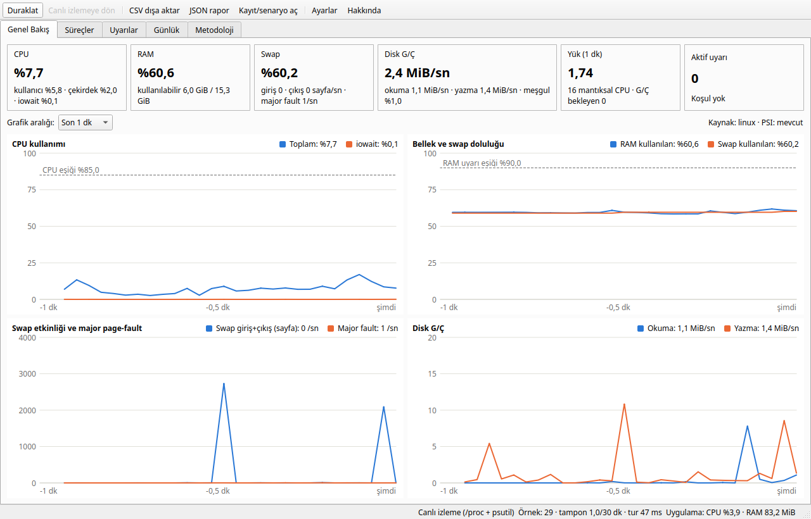
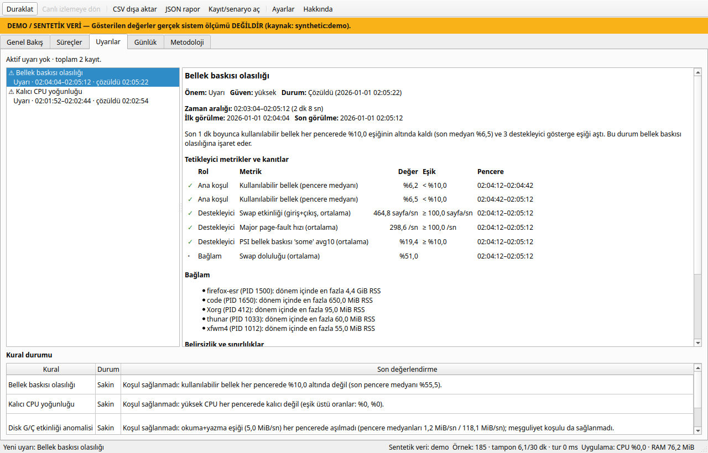
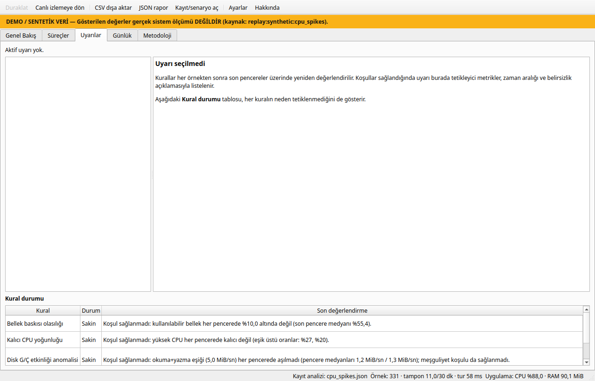

| Grup üyesi | Öğrenci numarası |
|---|---|
| Eren Can Dönertaş | 241101011 |
| Yusuf Yankı Ütgün | 231101020 |
| Oğuz Giray Bori | 231101076 |
PardusInsight, Pardus kullanıcılarının sistem kaynaklarının durumunu yalnızca görmekle kalmayıp kaynak baskısının olası nedenlerini anlaşılır ve doğrulanabilir biçimde yorumlamasını hedefleyen, salt-okunur çalışan bir masaüstü uygulamasıdır. Grup üyeleri ve öğrenci numaraları kapakta verilmiştir. Aşama 1 önerisinde planlanan sorumluluklar Bölüm 15'te yer alır.
Bilgisayar yavaşladığında kullanıcılar genellikle anlık yüzdeler gösteren ayrı ayrı izleme araçlarına bakar. Oysa yüksek CPU kullanımı, bellek baskısı, artan swap etkinliği ve yoğun disk G/Ç'si farklı sorunlardır. Tek bir anlık değerden bunları ayırt etmek için işletim sistemi bilgisi gerekir. Aşama 1'deki somut senaryoda tarayıcı ve geliştirme ortamı açıkken bilgisayar yavaşlar. Kullanıcı kullanılabilir RAM, swap giriş/çıkışı, major page-fault ve süreç tüketimini birlikte görmek ister.
Amaç: Standart kullanıcı yetkisiyle Linux çekirdeğinin /proc arayüzünden
seçilmiş sayaçları okumak, zaman pencereleri üzerinde birlikte değerlendirmek ve
olasılık dili kullanan, hangi metriklerin hangi eşiklerle karşılaştırıldığını gösteren
açıklamalı uyarılar üretmek. Uygulama hiçbir sistem ayarını değiştirmez, süreç sonlandırmaz
ve ağ bağlantısı kurmaz.
| İşlev | Durum | Ana dosya |
|---|---|---|
| Canlı CPU (toplam, kullanıcı/çekirdek, iowait, steal), RAM, swap, swap giriş/çıkış, major/minor page-fault, disk okuma/yazma (hız ve kümülatif), PSI, süreç listesi | Çalışıyor | collectors/procfs.py, system.py, processes.py |
| 2 sn varsayılan örnekleme, arka plan iş parçacığı | Çalışıyor | ui/worker.py |
| 30 dakikayla sınırlı geçmiş tamponu | Çalışıyor | core/history.py |
| CPU/RAM/swap/disk geçmiş grafikleri, süreç tablosu, özet kartları | Çalışıyor | ui/charts.py, ui/main_window.py |
| Üç açıklanabilir, zaman pencereli kural | Çalışıyor | analysis/rules.py, engine.py |
| Uyarıda kanıt, eşik, zaman aralığı, güven, belirsizlik | Çalışıyor | analysis/explain.py, ui/alerts_view.py |
| CSV ve JSON raporu, kayıt yeniden analizi | Çalışıyor | export/ |
| Sentetik demo modu (açık etiketli), GUI'siz komut satırı modu | Çalışıyor | collectors/synthetic.py, cli.py |
| Metodoloji ekranı (veri kaynakları ve geçerli eşikler) | Çalışıyor | analysis/methodology.py |
htop, xfce4-taskmanager veya GNOME Sistem İzleyicisi anlık değerleri ve süreçleri gösterir. Yorumlama kullanıcıya kalır. PardusInsight'ın özgün katkısı bu araçların yerine geçmek değil, üstlerine kural tabanlı bir teşhis katmanı eklemektir:
Mevcut araçların kodu kullanılmamıştır. psutil ve PySide6 yalnızca bağımlılık olarak kullanılır (Bölüm 17).
| Bileşen | Sürüm (test edilen) | Lisans | Kullanım amacı |
|---|---|---|---|
| Python | 3.12.3 (geliştirme); hedef ≥ 3.9, Pardus 25 ile 3.13 beklenir | PSF | Uygulama dili |
| Linux procfs, sysfs | Çekirdek 7.0 (geliştirme makinesi) | — | Birincil metrik kaynağı (salt-okunur) |
| psutil | 7.2.2 ve 5.9.8 | BSD-3-Clause | Süreç listesi; /proc okunamazsa yedek; çapraz doğrulama |
| PySide6 (QtCore/QtGui/QtWidgets) | 6.12.0 ve 6.8.2.1 (Debian 13 sürümü) | LGPLv3 | Masaüstü arayüzü |
| pytest | 9.2.0 ve 8.3.5 | MIT | Otomatik testler |
| ruff, mypy | 0.15.17, 2.4.1 | MIT | Statik denetim (yalnızca geliştirme) |
Temel teknik tercihler:
/proc sayaçlarından fark alınarak hesaplanır. İşletim sistemleri dersinin içeriği bu hesaplamalarda görünür. psutil yedek ve doğrulama kaynağıdır.--headless ile komut satırında çalışır.Mimari, Aşama 1 önerisindeki beş katmanı izler. core/service.py içindeki
MonitorService Qt'den bağımsızdır. Aynı hattı GUI, komut satırı modu ve testler kullanır.
Arka plan iş parçacığı ile GUI arasında paylaşılan tek değişken yapı HistoryBuffer'dır.
Bu yapı bir kilitle korunur ve okuyana kopya döndürür.
| Paket / modül | Sorumluluk |
|---|---|
collectors/procfs.py | Saf ayrıştırıcılar: /proc/stat (USER_HZ → sn), meminfo (kB → bayt), vmstat, diskstats (sektör × 512), loadavg, pressure/*; /sys/block ile fiziksel disk seçimi |
collectors/system.py | Bölüm bazında okuma. Başarısız bölüm için psutil yedeği. Hatalar errors alanına yazılır ve günlüğe kaydedilir |
collectors/processes.py | Süreç taraması, CPU'nun çekirdek sayısına göre normalizasyonu, (pid, create_time) anahtarlı G/Ç hızı, uid → kullanıcı adı önbelleği |
collectors/synthetic.py | Evre tabanlı 8 senaryo (normal, cpu, cpu_spikes, memory, memory_low_quiet, disk, disk_steady, demo) |
core/models.py | Değişmez veri modelleri (RawSnapshot, SystemSample, Alert, Evidence…), birim sözlüğü |
core/normalize.py, history.py, service.py | Fark tabanlı hızlar, sınırlı tampon, istisna fırlatmayan tick() |
analysis/ | Pencere yardımcıları, 3 kural, kural motoru, açıklama ve metodoloji metinleri |
export/ | CSV/JSON yazma-okuma, atomik yazım |
ui/ | Ana pencere, worker, grafik, süreç modeli, uyarı paneli, ayarlar |
cli.py | GUI / headless / sentetik / kayıt analizi girişleri, günlük düzeyi |
Bir örnekleme turunun akışı:
QTimer her 2 saniyede MonitorService.tick()'i çağırır.LinuxSystemCollector.collect() her bölümü ayrı ayrı okur ve kümülatif sayaçları RawSnapshot olarak döndürür (zaman: duvar saati + monotonik saat).ProcessCollector süreçleri tarar. Sonlanan ve izin verilmeyen süreçler sayılarak atlanır.Normalizer önceki ham ölçümle farkı alıp hız ve yüzdeleri hesaplar ve bir SystemSample üretir. İlk örnekte hızlar None olur.HistoryBuffer'a eklenir. 30 dakikadan eski örnekler atılır.RuleEngine son 7 dakikalık veriyle üç kuralı değerlendirir. Uyarıları açar, günceller veya kapatır.TickResult nesnesi olarak Qt sinyaliyle GUI'ye iletilir. GUI kartları, görünen grafikleri, uyarı panelini ve durum çubuğunu günceller.CPU yüzdesi psutil ile aynı tanımla hesaplanır:
(Δtoplam − Δidle − Δiowait) / Δtoplam. guest alanları çekirdekte zaten
user'a dahil olduğu için toplama eklenmez. Swap giriş/çıkış, major/minor fault ve disk
hızları Δsayaç / Δsüre olarak hesaplanır. Süre time.monotonic() farkıdır. İlk
örnekte hız bilinmez ve "—" gösterilir. Bir sayaç azalırsa (sıfırlanma, taşma, CPU hotplug) negatif
değer üretilmez, alan boş bırakılır.
Örnek zaman damgası ilk duvar saati + (monotonik − ilk monotonik) olarak üretilir. NTP veya elle yapılan saat değişikliği pencere sıralamasını bozmaz (test edildi).
/proc bölümü bağımsız okunur. OSError, PermissionError
veya biçim hatası yalnızca o alanı boş bırakır ve psutil yedeği denenir.NoSuchProcess ve AccessDenied sayılarak atlanır. PID yeniden kullanımında eski G/Ç sayacı uygulanmaz.MonitorService.tick() hiçbir koşulda istisna fırlatmaz. Kuralların hataları yalıtılır ve aynı hata günlüğe bir kez WARNING düzeyinde yazılır.| Problem | Çözüm |
|---|---|
| Disk toplamında LVM/RAID ve bölümlerin çift sayılması | Yalnızca /sys/block altındaki fiziksel diskler. loop, dm-*, md*, zram, sr ve bölümler dışlandı |
| Disk kuralının, yükün yeni başladığı pencerede birkaç yüksek örnekle tetiklenmesi | Pencere ortalaması yerine medyan kullanıldı |
| Çözülmüş bellek uyarısında bağlamın, son örnekten alındığı için baskı sonrası değerleri göstermesi | Bağlam tüm dönem üzerinden toplanıyor (süreç başına en yüksek RSS) |
| GUI modunda CPU kullanımının %5 hedefinin sınırında olması (%5,04) | Profil, QSortFilterProxyModel'in 500 süreçte her turda ~6000 Python çağrısı yaptığını gösterdi. Sıralama model içinde tek sorted() çağrısına taşındı, gizli sekmeler güncellenmiyor. GUI turu 17–32 ms'den 3–9 ms'ye indi |
| Ayarlardan aralık 0,5 sn'ye düşürülünce tamponun 30 dk yerine 15 dk tutması | Kapasite aralık değişiminde yeniden hesaplanıyor (test eklendi) |
MainWindow.thread niteliğinin QObject.thread() metodunu gölgelemesi (mypy ile bulundu) | sampler_thread olarak yeniden adlandırıldı |
| Sentetik verinin gerçek ölçümle karıştırılma riski | Sarı "DEMO / SENTETİK VERİ" şeridi, CSV'de data_source sütunu, JSON'da is_synthetic, komut satırında [SENTETİK] öneki |


Ortak ilkeler: Değerlendirme dönemi en yeni örnekten geriye doğru iki adet 30 saniyelik pencereye bölünür. Ana koşul her pencerede ayrı ayrı sağlanmalıdır. Pencerede beklenen örneklerin en az %60'ı geçerli değilse sonuç üretilmez ("Yetersiz veri"). Uyarı, koşul 10 saniye boyunca sağlanmazsa "çözüldü" olur. Her uyarıda şu ortak cümle yer alır: "Bu bir olasılık değerlendirmesidir, kesin arıza tanısı değildir." Eşikler Ayarlar ekranından veya JSON dosyasından değiştirilebilir.
| Kural | Ana koşul (her pencerede) | Destek / bağlam | Önem / güven |
|---|---|---|---|
| Bellek baskısı olasılığı | MemAvailable medyanı < %10 (katı) | En az biri gerekli: swap giriş+çıkış ≥ 100 sayfa/sn, major fault ≥ 100/sn, PSI bellek some ≥ %10. Bağlam: swap doluluğu, dönemdeki en yüksek RSS'li süreçler | Uyarı. Her pencerede < %5 ve ≥ 2 destek varsa Kritik olasılık. Güven: 2+ destekte yüksek, aksi hâlde orta |
| Kalıcı CPU yoğunluğu | Örneklerin ≥ %80'i CPU ≥ %85 | Kullanıcı/çekirdek payı, steal, yük ortalaması. Tek süreç grubu yükün ≥ %50'sini oluşturuyorsa "süreç kaynaklı", aksi hâlde "dağılmış" | Uyarı. Güven: oran ≥ %95 ve ortalama ≥ eşik + 5 ise yüksek |
| Disk G/Ç anomalisi | Okuma+yazma medyanı ≥ max(3 × önceki 5 dk medyanı, 5 MiB/sn) veya meşguliyet medyanı ≥ %80 (önceki dönemde düşükken) | iowait, G/Ç bekleyen süreç sayısı, PSI G/Ç, erişilebilen süreçlerin G/Ç hızları | Her zaman Gözlem. Güven: iki koşul birlikte sağlanırsa orta, aksi hâlde düşük |
Neden tek metrik yetmiyor? Düşük MemAvailable değeri, bellek dolu olduğu hâlde sistemin
sayfa takası yapmadığı sağlıklı bir durumu da gösterebilir (memory_low_quiet karşı-örneği).
Ortalama CPU, kısa ve çok yüksek sıçramalardan etkilenir (cpu_spikes). Boş bir diskte
0,1 → 1 MiB/sn "10 kat artış" anlamsızdır (mutlak alt sınır). NVMe'de %util doygunluğu
abartabilir. Bu yüzden disk kuralı yalnızca gözlem üretir.

cpu_spikes kaydında uyarı yoktur. Kural durumu tablosu nedenini açıklar ("eşik üstü oranlar %27, %20"). Sentetik veri./proc ağacıyla test edilir. Normalizasyon elle hesaplanmış sayaçlarla, kurallar elle kurulmuş örnek dizileriyle doğrulanır. Testler gerçek sistemin o anki CPU/RAM değerlerine bağlı değildir.PermissionError durumları denenir. Gerçek sistemde de tarama sırasında sonlanan çocuk süreçlerle test edilir.QT_QPA_PLATFORM=offscreen ile açılış/kapanış, sekme güncellemeleri, dışa aktarma, kayıt açma, demo şeridi ve donmama testi çalıştırılır. Donmama testinde her ölçüm turu yapay olarak 300 ms sürerken GUI olay döngüsünün kalp atışı ölçülür.open() kip denetimi ve açık istek olmadan dosya yazılmadığının kontrolü yapılır.-m linux): /proc ile psutil, her biri 10 örnek olmak üzere karşılaştırılır.| Koşu | Ortam | Geçti | Başarısız | Atlandı |
|---|---|---|---|---|
| Tam paket | Python 3.12.3, PySide6 6.12.0, psutil 7.2.2, pytest 9.2.0 | 136 | 0 | 0 |
| Debian 13 PySide6 sürümüyle uyumluluk | PySide6 6.8.2.1, psutil 5.9.8, pytest 8.3.5 | 136 | 0 | 0 |
| Bağımlılıksız Python | Sistem Python 3.12.3, psutil ve PySide6 yok | 121 | 0 | 7 |
Yalnız deterministik testler (-m "not linux") | Tam paket ortamı | 130 | 0 | 6 seçilmedi |
| Statik denetim | ruff 0.15.17 (E, F, W, B) · mypy 2.4.1 | ruff: sorun yok · mypy: 33 dosyada sorun yok | ||
| Test dosyası | Test | Kapsam |
|---|---|---|
test_procfs.py | 13 | /proc ayrıştırıcıları, eski çekirdek biçimleri, disk filtresi, salt-okunur açma |
test_collectors.py | 12 | psutil yedeği, kaynaksız çalışma, NoSuchProcess, AccessDenied, PermissionError, PID yeniden kullanımı |
test_normalize_history.py | 13 | CPU/swap/disk/minor fault hesapları, sayaç sıfırlanması, saat geri alma, 30 dk sınırı, eşzamanlılık |
test_rules.py | 30 | 3 kural: pozitif, negatif, eşik sınırı, karşı-örnek, süreç kaynağı |
test_engine.py | 8 | Yaşam döngüsü, dalgalanma koruması, hata yalıtımı, deterministik yeniden analiz |
test_scenarios_service.py | 17 | 8 senaryo uçtan uca, hatalı kaynakta tick(), ayar değişikliği, tampon kapasitesi |
test_export.py | 13 | CSV/JSON gidiş-dönüş, geçersiz rapor, atomik yazım, gizlilik, veri kaynağı ve birimler |
test_cli_safety.py | 12 | Komut satırı modu, sentetik etiket, metodoloji, AST güvenlik taraması |
test_gui.py | 9 | Pencere güncelleme, dışa aktarma, kayıt açma, donmama, açılış/kapanış, demo şeridi |
test_crosscheck_linux.py | 5 | Canlı /proc ile psutil karşılaştırması (10'ar örnek) |
test_formatting.py | 4 | Türkçe biçimlendirme, sentetik sayaçlar |
| Toplam | 136 |
| Senaryo | Süre (simülasyon) | Beklenen | Üretilen uyarı | Sonuç |
|---|---|---|---|---|
| demo | 500 sn | CPU, bellek, disk | sustained_cpu, memory_pressure, disk_io_anomaly | PASS |
| cpu | 420 sn | CPU | sustained_cpu | PASS |
| memory | 420 sn | bellek | memory_pressure | PASS |
| disk | 660 sn | disk | disk_io_anomaly | PASS |
| cpu_spikes (karşı-örnek) | ~660 sn | yok | yok | PASS |
| memory_low_quiet (karşı-örnek) | 360 sn | yok | yok | PASS |
| disk_steady (karşı-örnek) | 900 sn | yok | yok | PASS |
| normal | 1200 sn | yok | yok | PASS |
scripts/validate_metrics.py --rounds 10 --interval 1. Aşama 1 başarı ölçütü: "en az 10 örnek karşılaştırma".
| # | MemTotal eşit | MemAvailable farkı (MiB) | SwapTotal eşit | Swap kullanılan farkı (MiB) | CPU user farkı (sn) | CPU % (/proc) | CPU % (psutil) | Disk okuma farkı (MiB) |
|---|---|---|---|---|---|---|---|---|
| 1 | evet | 0,00 | evet | 0,00 | 0,00 | 9,4 | 9,5 | 0,00 |
| 2 | evet | 0,00 | evet | 0,00 | 0,00 | 7,5 | 7,4 | 0,00 |
| 3 | evet | 0,00 | evet | 0,00 | 0,00 | 5,0 | 5,0 | 0,00 |
| 4 | evet | 0,00 | evet | 0,00 | 0,00 | 5,3 | 5,2 | 0,00 |
| 5 | evet | 0,00 | evet | 0,00 | 0,00 | 6,9 | 6,9 | 0,00 |
| 6 | evet | 0,00 | evet | 0,00 | 0,00 | 8,1 | 8,0 | 0,00 |
| 7 | evet | 0,00 | evet | 0,00 | 0,00 | 3,3 | 3,3 | 0,00 |
| 8 | evet | 0,00 | evet | 0,00 | 0,00 | 4,8 | 4,8 | 0,00 |
| 9 | evet | 0,00 | evet | 0,00 | 0,00 | 7,5 | 7,5 | 0,00 |
| 10 | evet | 0,00 | evet | 0,00 | 0,00 | 9,9 | 9,9 | 0,00 |
En büyük CPU % farkı 0,1 puandır. İki kaynak aynı anda okunamadığı için bu fark okuma anlarının kaymasından gelir. MemTotal ve SwapTotal her örnekte birebir eşittir.
Neden yapılamadı: Geliştirme Ubuntu 24.04 çalışan bir makinede yapıldı. Bu makinede
Pardus ISO'su, sanal makinesi veya imajı bulunmuyordu. Resmî Pardus 25 Docker imajı
(pardus/yirmibes, Debian 13 tabanlı) ile kısmi bir kullanıcı alanı testi planlandı.
Ancak imajı indirme işlemi, geliştirmede kullanılan yapay zekâ aracının otomatik izin denetimi
tarafından reddedildi ve bu engel aşılmaya çalışılmadı. Konteyner testi yapılsaydı bile ana
makinenin çekirdeğini kullandığı ve XFCE içermediği için XFCE VM testinin yerini tutmazdı.
Pardus'a yakınlık için yapılanlar: (1) Debian 13 deposundaki PySide6 sürümü (6.8.2) ile
tüm testler geçti (Bölüm 11.1). (2) Kurulum komutları Debian 13 paket adlarına göre hazırlandı:
python3-psutil, python3-pyside6.qtwidgets. Pardus 25 sürüm notlarındaki
paket sürümleri deb13 ekini taşır.
Yapılması gerekenler: PARDUS_VALIDATION.md belgesi temiz bir Pardus 25.1 XFCE
VM için kurulum komutlarını ve 30 maddelik kabul listesini içerir. scripts/pardus_validate.sh
betiği otomatik kısmı tek komutla çalıştırıp sonuçları bir klasöre yazar: ortam, paket sürümleri,
pytest, 10 örnekli doğrulama, 60 sn canlı izleme, GUI'siz ve GUI'li 60 sn performans, ekran
görüntüleri. Ekip bu sonuçları teslimden önce bu bölüme eklemelidir:
| Pardus kontrolü | Sonuç |
|---|---|
| Temiz kurulum ve bağımlılıklar (apt) | NOT TESTED — ekip dolduracak |
| Standart kullanıcıyla GUI açılışı, canlı metrikler, grafik güncellemesi | NOT TESTED — ekip dolduracak |
| Kurallar, demo modu, dışa aktarma | NOT TESTED — ekip dolduracak |
| 60 sn yanıt verebilirlik, CPU < %5, RAM < 200 MiB | NOT TESTED — ekip dolduracak |
| Temiz kapanış | NOT TESTED — ekip dolduracak |
scripts/perf_check.py ile canlı sistemde (~500 süreç), 2 sn örnekleme aralığıyla 60 saniye ölçüldü.
CPU, sürecin kendi os.times() farkından, RSS ise /proc/self/status içindeki VmRSS'ten alındı.
| Mod | Ortalama CPU (tek çekirdek = %100) | Toplam kapasiteye göre | RSS (en yüksek) | Tur süresi medyan / maks | GUI olay döngüsü |
|---|---|---|---|---|---|
GUI'siz (--headless) | %2,03 | %0,13 | 19,6 MiB | 41,7 / 52,1 ms | — |
| GUI + arka plan worker (offscreen) | %4,09 | %0,26 | 82,1 MiB | 43,7 / 65,1 ms | En uzun aralık 29 ms; 2993 kalp atışından hiçbiri 100 ms'yi aşmadı |
| Aşama 1 hedefi | Geliştirme makinesinde | Pardus VM'de |
|---|---|---|
| Varsayılan örnekleme 2 sn | Sağlandı | NOT TESTED |
| Geçmiş tamponu 30 dk ile sınırlı, sınırsız büyüme yok | Sağlandı (birim testi: 2000 örnek → 901). 60 sn'de RSS sabit | NOT TESTED (35 dk koşu gerekli) |
| 60 sn çalışmada GUI yanıt veriyor | Sağlandı | NOT TESTED |
| Ortalama CPU < %5 | Sağlandı (%4,09, tek çekirdek ölçeği; sınıra yakın) | NOT TESTED |
| RAM < 200 MiB | Sağlandı (82 MiB) | NOT TESTED |
GUI ölçümüne, ölçüm betiğinin kendi 50 Hz kalp atışı zamanlayıcısı da dahildir. CPU maliyetinin büyük kısmı süreç taramasıdır (~500 süreçte 40–60 ms/tur). Daha az sürecin çalıştığı bir VM'de daha düşük olması beklenir, ancak bu ölçülmedi. Gerekirse Ayarlar → Süreç listesi sıklığı = 2 ayarı bu maliyeti yarıya indirir. Ölçümler offscreen render ile alındı. Gerçek XFCE oturumundaki çizim maliyeti Pardus'ta ölçülmelidir.
| İlke | Uygulama | Denetim |
|---|---|---|
| Root yetkisi istenmez | Hiçbir işlev root gerektirmez. Root ile başlatılırsa yalnızca bilgi uyarısı verilir | test_root_warning_is_informational |
| Sistem ayarı değiştirilmez, sistem dosyasına yazılmaz | /proc ve /sys yalnızca "r" kipinde açılır | AST taraması + çalışma zamanında open kip izleme testi |
| Süreçlere sinyal gönderilmez | kill/terminate/suspend/nice/affinity çağrısı yoktur | AST taraması (test_no_process_control_or_destructive_calls) |
| Kabuk komutu çalıştırılmaz, ağ bağlantısı kurulmaz | subprocess, socket, urllib, http, requests, ctypes, signal modülleri kullanılmaz | test_no_dangerous_modules_are_imported |
| Veri yalnızca kullanıcı isteğiyle dışa aktarılır | Varsayılan konum ev dizini. Kullanıcı yolu seçer. Atomik yazım ve 0600 izinleri | test_no_files_are_written_without_explicit_export |
| Kişisel veri sızmaz | Raporlarda kullanıcı adı ve makine adı yoktur | test_report_does_not_contain_user_or_host_name |
| Bellek sınırlı | 30 dk yaş sınırı + sabit kapasite. Uyarı günlüğü 200 kayıt | Tampon testleri |
| Sentetik veri gerçek sanılmaz | Şerit, data_source, is_synthetic, [SENTETİK] | GUI, dışa aktarma ve komut satırı testleri |
Not: Geliştirici betiği scripts/build_submission.py, teslim paketini oluşturmak için yalnızca
git ls-files çalıştırır. Bu betik uygulamanın parçası değildir ve güvenlik taraması uygulama paketini (pardusinsight/) kapsar.
| Üye | Planlanan sorumluluk (Aşama 1) | Gerçekleşen katkı | Doğrulama |
|---|---|---|---|
| Eren Can Dönertaş | Metrik toplama, normalizasyon ve tampon: collectors/, core/. Metrik doğrulama, performans, uyumluluk | [EKİP DOLDURACAK] | Doğrulanmadı |
| Yusuf Yankı Ütgün | Masaüstü arayüzü, grafikler ve raporlama: ui/, export/. Uyarı kartları, kullanıcı rehberi, demo | [EKİP DOLDURACAK] | Doğrulanmadı |
| Oğuz Giray Bori | Analiz motoru, test otomasyonu ve paketleme: analysis/, tests/, scripts/. Pardus VM, test raporu | [EKİP DOLDURACAK] | Doğrulanmadı |
Teslimden önce yapılması önerilen ve her üyenin kendi commit'iyle kaydedilecek işler:
Pardus doğrulaması ve kalibrasyon, XFCE'de arayüz kontrolü, demo videosu, bu tablonun
doldurulması. Ayrıntılar docs/GOREV_DAGILIMI.md belgesindedir.
--config ile okunur, uygulama ayar yazmaz.VIDEO_LINK.txt bekleme durumundadır.memory.pressure, cpu.stat) ile oturum veya uygulama bazında baskı analizi/proc/<pid>/smaps_rollup) ile daha doğru bellek bağlamı.deb paketi ve masaüstü simgesi/proc/net/dev, yalnızca okuma) ve sıcaklık (/sys/class/thermal)Ders yönergesi yapay zekâ kullanımına izin verir ve hangi amaçlarla kullanıldığının açıklanmasını ister. Bu projede yapay zekâ şu şekilde kullanılmıştır:
ORAL_EXAM_PREP.md hazırlanmıştır. Pardus
doğrulaması, eşik kalibrasyonu, demo videosu ve Bölüm 15'teki katkı tablosu ekip tarafından
tamamlanmalıdır.THIRD_PARTY_NOTICES.md).